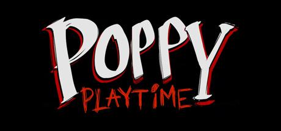
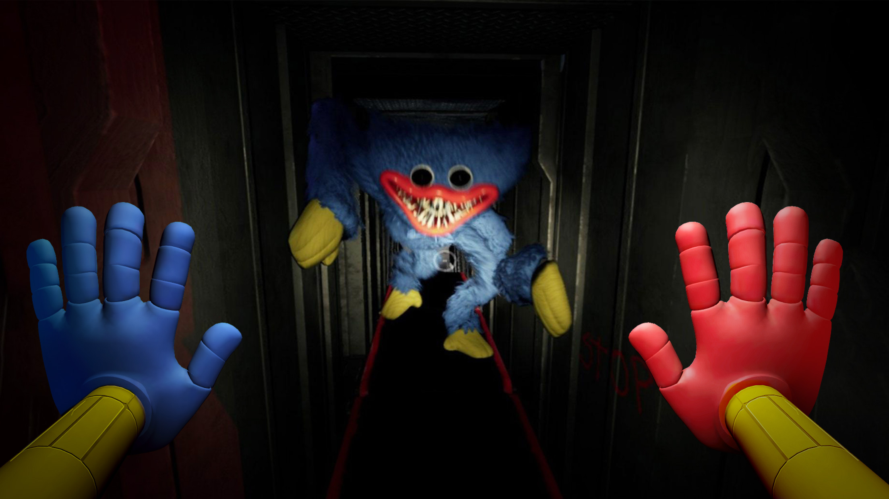
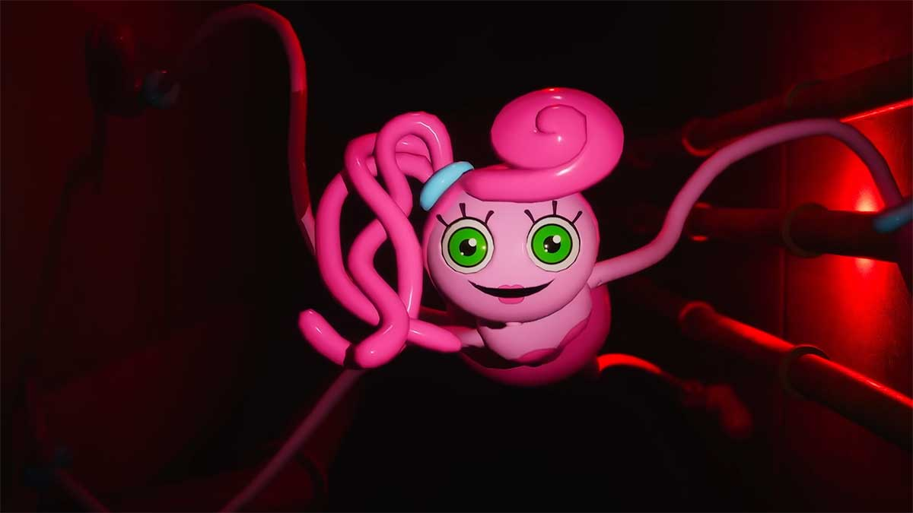
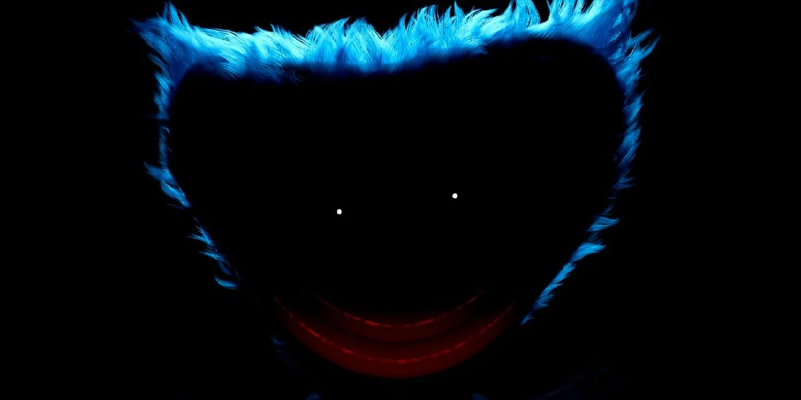
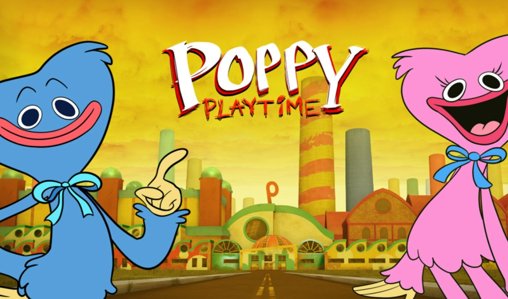

Poppy Playtime - игра жанра хоррор, выпущенная американской инди-компанией "MOB games" 12 октября 2021 года. Игра сразу же набрала популярность, в основном, благодаря главному антагонисту в виде гигантской плюшевой игрушки. После того, как большая часть сообщества завершила прохождение первой главы, волна знаменитостияё игры слегка спала. Но, как оказалось, вселенная Poppy Playtime содержит очень много тайн. Игроки начали разгадывать их, но многое раскрыть не удалось. 5 мая 2022 года разработчики выпустили долгожданную вторую главу. Игра снова набрала большую популярность. Появилось немалое количество новых теорий, а некоторые догадки игроков вовсе опроверглись.

Глава 1
Первая глава игры вышла вместе с ее релизом. На первом этапе прохождения нас знакомят с устройством "Grabpack", которое в последствии станет нашим главным инструментом для прохождения головоломок и борьбы с монстрами. Также появилось предположение касательно главного героя. Рост персонажа невелик, и поэтому довольно-таки уместно предполагать, что мы играем за ребенка. К сожалению, вид от первого лица не позволяет рассмотреть главного героя со стороны. Игроки гадают, что же могло заставить ребенка пробраться в заброшенный завод с такой печальной историей. Про синего монстра Huggy Wuggy даже говорить не стоит. Он сразу стал самым популярным персонажем в интернете, хотя многие даже не знали из какой он игры и кто он такой.

Глава 2
По причине небольшого количества разработчиков проекта, вторая часть игры вышла спустя практически 7 месяцев. Но результат оправдал потраченное время. Фанаты серии сразу же заметили приличное улучшение графики. Появилось больше головоломок и загадок. В качестве главного антагониста выступает до жути злобная Mommy long legs. Назвали ее так из-за супер-длинных конечностей. В процессе игры главный герой исследует подземную часть фабрики. По большей части, сюжет второй главы движется вокруг одной локации с поездом. К концу прохождения главы выясняется, что корпорация Poppy Playtime использует фабрику не только для создания ярких игрушек, но и в качестве подземного бункера, в котором ученые проводят эксперименты со всякими монстрами.

Теории
Пока некоторые ждут третьей главы серии, истинные фанаты начинают строить теории относительно происхождения и развития корпорации Poppy Playtime. Основным источником многих тайн являются кассеты, разбросанные по всей локации фабрики. Игроки считают, что на данный момент они не приносят значительной пользы ввиду большого количества несостыковок и совпадений. Так как вселенная только начинает развиваться, никто не может быть уверен в достоверности своих теорий. Однако, есть приличное количество довольно правдоподобных вариантов, которые вы можете прочитать и оценить на различных форумах или сообществах в социальных сетях. Во всем этом Poppy Playtime похож на серию игр Five Nights at Freddy's, и многие этому безмерно рады.
Во время прохождения первой главы мы находим кассету. Вставив ее в приемник, на экране мы не видим ничего, так как это всего-навсего аудио дорожка. В ней мы слышим голос мужчины, который, видимо, работает ученым фабрики. Он говорит про некий эксперимент 1.0.0.6, вышедший из строя. Также на заднем плане слышны крики других людей и попытки кого-то выбить дверь. Далее мы слышим как дверь распахивается и звук прерывается. Эксперимент 1.0.0.6 стал самой распространенной темой для теорий игроков. Все как один были уверены, что речь идет о Huggy Wuggy, однако с выходом второй главы становится известно, что это не так.

Еще неизвестно, что нас ждет в последующих главах. Игрокам остается только с нетерпением ждать продолжения серии и строить теории. Очень надеемся, что разработчики продолжат в том же духе, и с каждой новой главой будет все интереснее и захватывающе.
